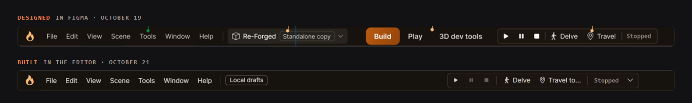
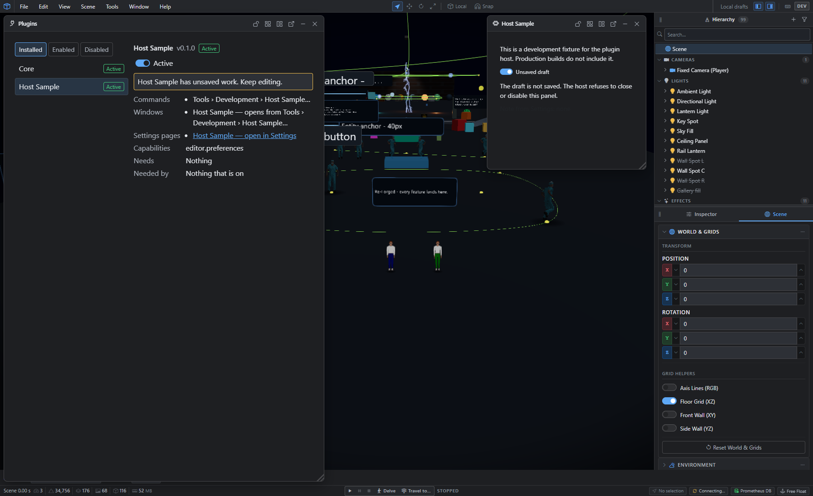

The rebuild starts: a desktop app and its first plugin
Contents
A day after round one of the designs was approved, the code started. Four pieces landed today.
A desktop app
The editor now runs as its own desktop app on Windows, built with Electron, with its own installer. The browser version keeps working alongside it.
The interesting part was closing it. The editor saves your work a moment after each edit, so closing the window has to save the last edit first. The plan assumed that a page closing itself from a script would raise the same "about to close" event as clicking the X. It doesn't. In Electron the window simply goes, with no close event at all. So now every way out (the X, quitting, Windows shutting down) waits up to a second while the last draft is written, and the page saves its own work on the one event that still fires on its way out.
The new title bar


The first slice of the new shell is in: the frame, the title bar with the menus and the transport in the middle, the Forge and Blue themes, and the dock layout underneath. It's checked against the Figma frames screenshot by screenshot. The scene switcher, the modes and command search come in the next slices.
Plugins, for real


The plugin host is in. Plugins can add commands, menu entries, windows and settings pages, and a Plugins manager lists them and turns them on and off. The test plugin above has an unsaved draft, so the manager won't turn it off until that draft is dealt with. That's the close guard from the designs, working.
Jobs, the first plugin
The Jobs window, which follows imports, sprite bakes and exports on the server, is now the first plugin that ships with the editor. Turn it off and its window, its menu entry and its status item all disappear. Turn it back on and it comes back exactly where it was.
Every review found something
Every piece is reviewed before it's merged, and every review found something real. My favourite: the editor used the Space bar for Play and Pause everywhere, so pressing Space on a focused button in any tool window started the simulation instead of pressing the button. Buttons get their Space bar back now.
Next
More of the shell (the activity bar, dock tabs and the command palette), then the rest of the tools move into plugins one at a time. Round three of the designs is drawn and waiting for review.